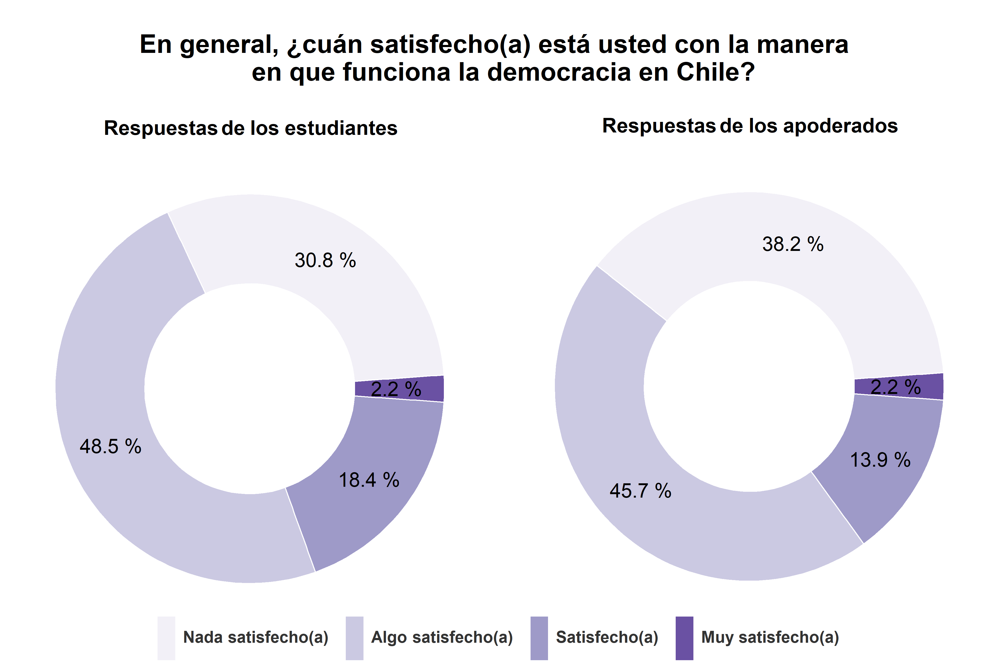
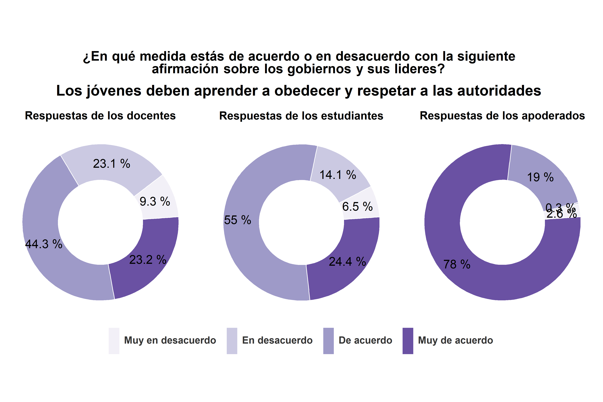
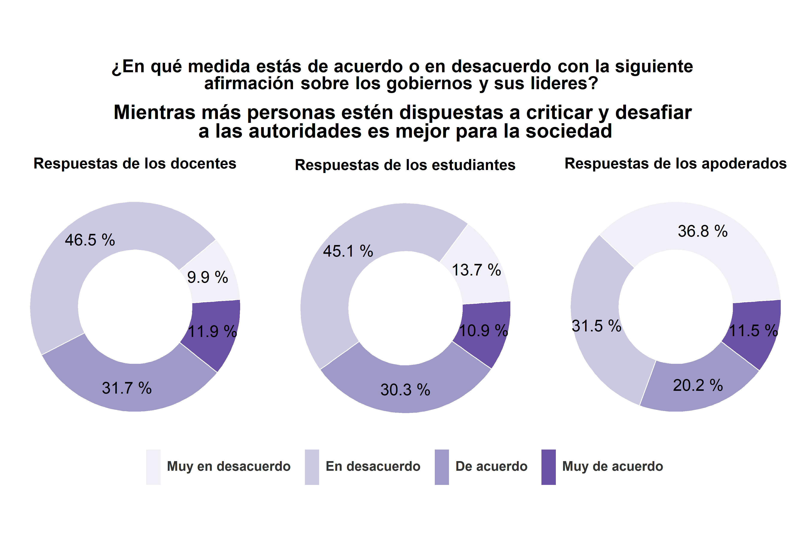
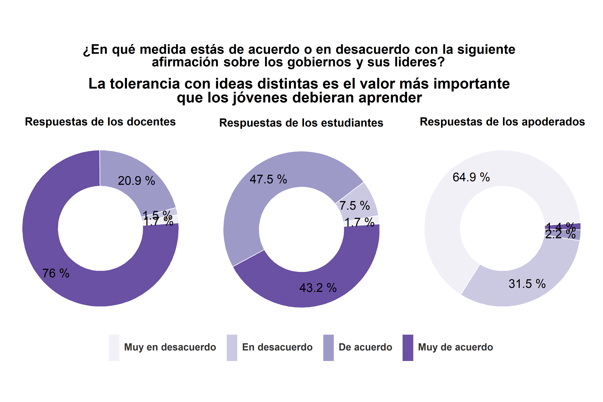
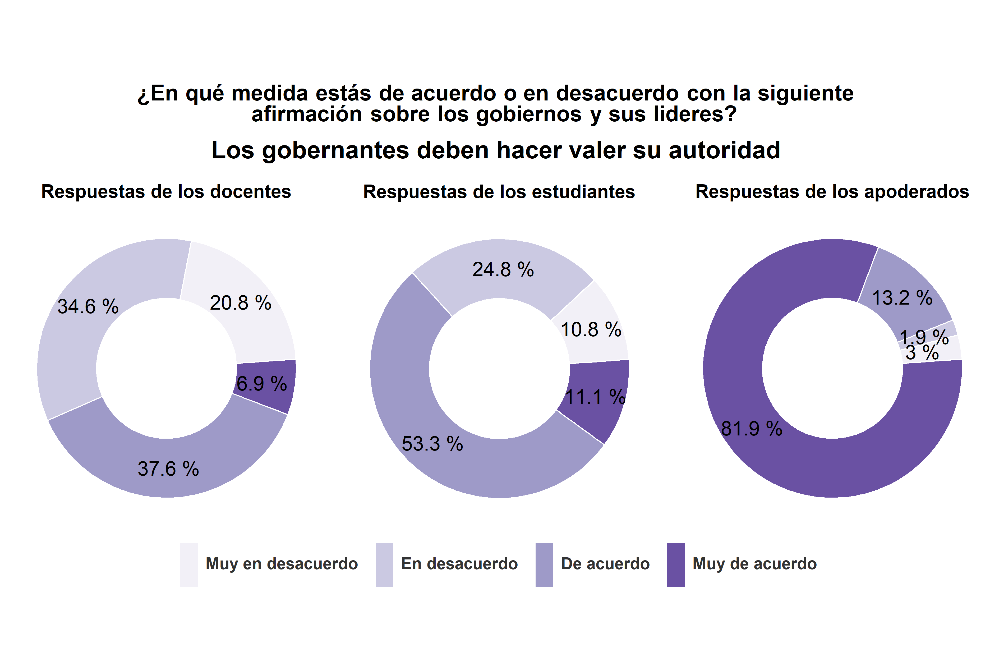
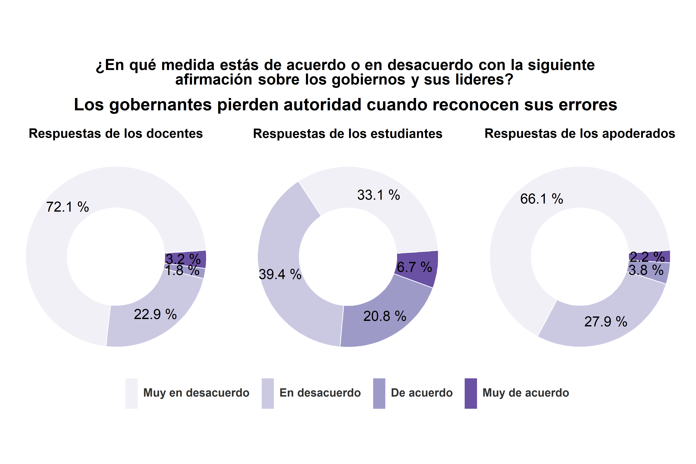
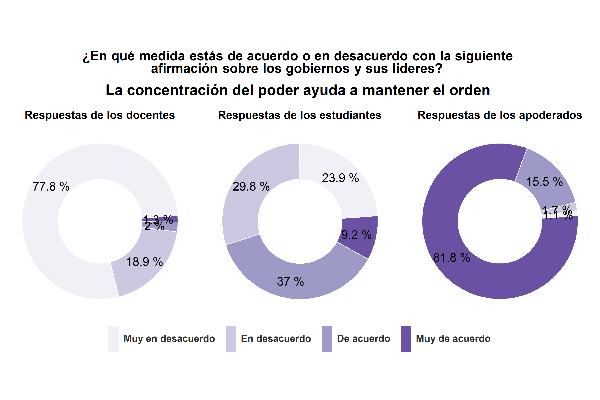
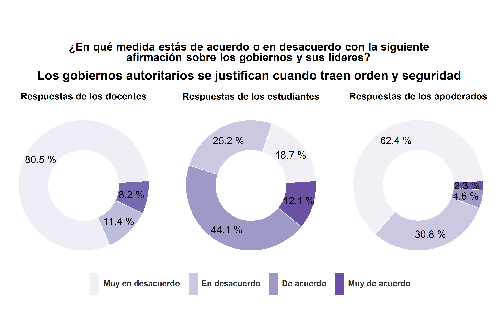
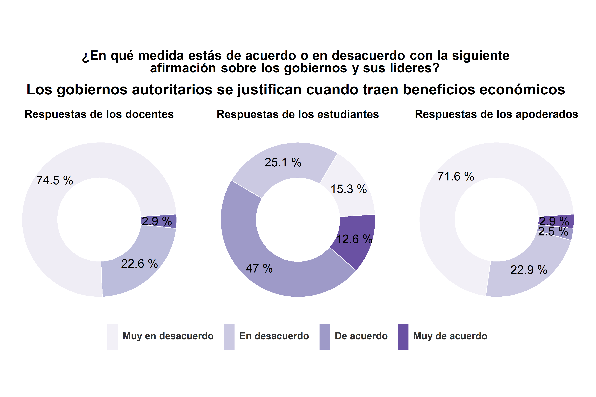

2.2 Satisfacción con la democracia y actitudes autoritarias

La mayoría de los estudiantes y apoderados se encuentra nada satisfecho(a) (un 28.2% y un 39.9%, respectivamente) o algo satisfecho(a) con la manera en que funciona la democracia en Chile (un 47.8% y un 44.4%, respectivamente).

La mayoría de los apoderados está muy de acuerdo con que los jóvenes deben aprender a obedecer y respetar a las autoridades (un 76.9%). Mientras que la mayoría de los docentes y de los estudiantes se encuentra de acuerdo con esta afirmación (un 51% y un 55.7%, respectivamente).

La mayoría de los docentes, estudiantes y apoderados se encuentra muy en desacuerdo o en desacuerdo con que mientras más personas estén dispuestas a criticar y desafiar a las autoridades es mejor para la sociedad. Más específicamente, el 9.9% de los docentes, el 13.7% de los estudiantes y el 36.8% de los apoderados se encuentra muy en desacuerdo con esta afirmación, mientras que el 46.5% de los docentes, el 45.1% de los estudiantes y el 31.5% de los apoderados está en desacuerdo.

La mayoría de los docentes está muy de acuerdo con que la tolerancia con ideas distintas es el valor más importante que los jóvenes debieran aprender (un 81.2) y la mayor parte de los estudiantes se encuentra de acuerdo (un 48%) o muy de acuerdo (41.6%). Mientras que la mayoría de los apoderados está muy en desacuerdo con esta afirmación (un 60.6%).

La mayoría de los docentes, estudiantes y apoderados está muy en desacuerdo con que a veces es mejor que los gobernantes tomen decisiones sin consultar a las mayorías (un 65.3%, un 50.4% y un 64.7%, respectivamente). La mayor parte de las personas restantes declaro encontrarse en desacuerdo con la afirmación (un 22.8% de los profesores, un 28.9% de los estudiantes y un 28.4% de los apoderados).

La mayoría de los apoderados está muy de acuerdo con que los gobernantes deben hacer valer su autoridad (un 81.9%) y la mayoría de los estudiantes se encuentra de acuerdo con la afirmación (un 53.3%). Las respuestas de los docentes son más heterogéneas. Un 34.6% de los docentes está en desacuerdo con la afirmación y un 37.6% está de acuerdo con esta.

La mayoría de los docentes y apoderados está muy en desacuerdo con que los gobernantes pierden autoridad cuando reconocen sus errores (un 69.3% y un 63.5%, respectivamente). La mayor parte de los estudiantes se encuentra muy en desacuerdo (un 29.9%) o en desacuerdo con la afirmación (un 39.4%).

La mayoría de los docentes está muy en desacuerdo con que la concentración del poder ayuda a mantener el orden (un 79.2%) y la mayoría de los apoderados se encuentra muy de acuerdo con esta afirmación (un 80.3%). La opinión de los estudiantes es más diversa. La mayor parte de los estudiantes se encuentra en desacuerdo (un 30.4%) o de acuerdo con la afirmación (un 38.1%).

La mayoría de los docentes y apoderados está muy en desacuerdo con que los gobiernos autoritarios se justifican cuando traen orden y seguridad (un 77.2% y un 60.4%, respectivamente). Mientras que la mayor parte de los estudiantes se encuentra de acuerdo con esta afirmación (un 45.5%).

La mayoría de los docentes y apoderados está muy en desacuerdo con que los gobiernos autoritarios se justifican cuando traen beneficios económicos (un 74.5% y un 71.6%, respectivamente). Mientras que la mayor parte de los estudiantes se encuentra de acuerdo con la afirmación (un 47%).